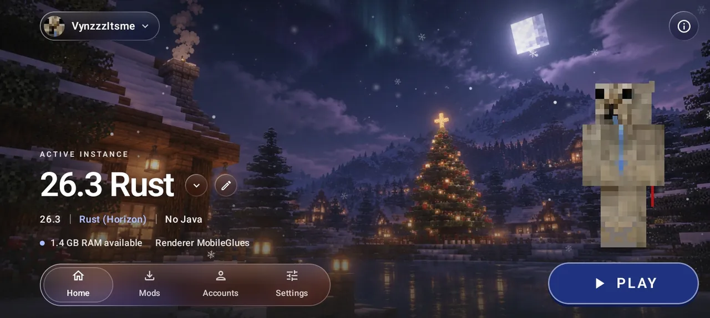
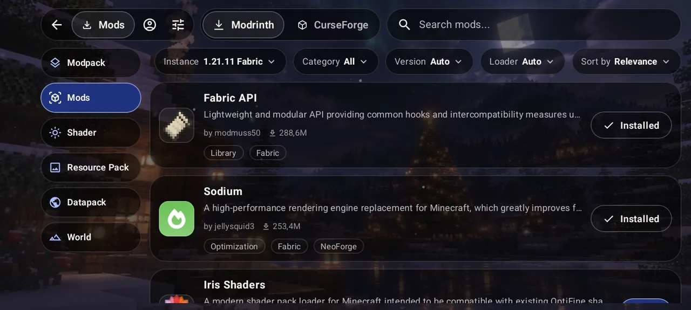

Minecraft Java,
made for Android.
AmberLauncher is a Minecraft Java Edition launcher for Android. Create an instance, add mods from Modrinth or CurseForge, and play.
Needs Android 8.0 or newer and 3 GB of RAM or more. Verify the APK.

Screens
A few screens from AmberLauncher.


Downloads
Counted live from GitHub Releases.
Getting started
From installing to joining a world.
- Open AmberLauncher. On Android 11 and newer, allow storage access so data is kept in the
nuxlauncherfolder. You can skip it; data then stays in the app's private folder. - Add an account under Accounts: Microsoft to play online, or offline to play on your own.
- Create an instance with Create Instance: choose a Minecraft version, then Vanilla, Fabric, Forge, or NeoForge.
- On Home, press DOWNLOAD and wait for it to finish (internet required), then press PLAY.
- Install mods, resource packs, and shaders from the Mods menu.
Features
AmberLauncher is a fork of Zalith (through NUX Launcher), so most of the hard work is theirs. These are just a few small things added on top, and some of them may not be in other launchers.
Looks
- Two styles: the default dark theme, or Liquid Glass, where panels become frosted glass over your wallpaper (Settings > Display, Android 12 and newer).
- Your own wallpaper: an image, a GIF, or a video, with dimming, an accent color, and an ambient glow that follows the picture.
- 6 languages: Bahasa Indonesia, English, Español, Tiếng Việt, Português (Brasil), and ภาษาไทย.
Accounts
- Microsoft, Ely.by, and offline in one list, with a skin and cape preview.
- Works on the Rust engine (Horizon) too: sign in with Microsoft, Ely.by, or an offline account there as well.
Controls
- Import layouts from other launchers: files from Zalith, Zalith 2, Pojav, and Mojo are converted to AmberLauncher's format automatically. Layouts can also be saved as presets.
- Macros: auto-typed chat or commands, key combos, and turbo clicking on any button.
- Touch control editor: adjust position, size, opacity, and buttons. There is a Bedrock-style hotbar and a joystick auto-sprint you can turn off.
- Controller (gamepad) support, including mods such as Controlify.
Game
- Separate instances with Vanilla, Fabric, Forge, and NeoForge, plus bundled Java 8, 17, 21, and 25.
- Renderer choices: Auto, Krypton, MobileGlues, GL4ES, Kopper Zink, and Freedreno (Turnip).
- Rust engine (Horizon), still experimental: runs without Java on the versions it supports.
Mods and content
- Modrinth and CurseForge right inside the app: mods, modpacks, resource packs, shaders, and datapacks, including their dependencies.
- Create an instance from a modpack (.mrpack or CurseForge .zip) in one go. Installing files manually works too.
More
- Screen recording built in: choose Game only or With buttons.
- Crash reports with optional log upload to mclo.gs.
- In-app updates, with the 32-bit or 64-bit APK chosen automatically.
- TouchController mod support (experimental).
Not supported yet: Forge for Minecraft 1.6.4 and older, NeoForge for 1.20.1 and older, and Quilt.
Choose an APK
If unsure, take the 64-bit one.
64-bit (arm64-v8a)
Almost every phone made in the last several years.
32-bit (armeabi-v7a)
For old phones with a 32-bit CPU. Game RAM is capped at about 1.2 GB and some renderers are unavailable. Not present in every release.
The first time you install, Android may ask you to allow installing apps from your browser or file manager. After that, updates can be installed from inside the launcher (Settings > Updates).
Verify the APK
For anyone who downloaded it elsewhere.
Every official APK is signed with the same key. Compare the APK's certificate fingerprint with the one below before installing.
Certificate fingerprint (SHA-256)App ID: com.itsvynzzzz.amberlauncher
How to report a security vulnerability is in SECURITY.md (Indonesian).
Help
Problems that come up often.
- The game closes by itself or crashes. Give the game no more than about half of your phone's RAM, close other apps, or lower the resolution ratio in Settings. Crash reports can be viewed inside the app.
- Low FPS. Lower the render distance, lower the resolution ratio, or try another renderer in Settings.
- A mod does not work. Make sure the instance's loader and Minecraft version match what the mod requires.
- Found a bug? Open an issue with the AmberLauncher version, your phone model and Android version, the steps that cause the problem, and the log. Logs shared from the launcher are scrubbed of tokens and passwords.
Privacy and security
What the launcher does with your account.
- Microsoft passwords are never stored. Sign-in uses Microsoft's official OAuth window.
- Minecraft assets and libraries are downloaded straight from Mojang's official servers and checked against their official SHA-1 fingerprints.
- All internet connections use HTTPS.
Credits and thanks
AmberLauncher is built on the work of many other projects.
Project foundation
| Project | Author | License |
|---|---|---|
| NUX Launcher (fork source) | IsraaDeveloper | GPL-3.0 |
| Zalith Launcher 2 | MovTery and contributors | GPL-3.0 |
| PojavLauncher | artdeell, khanhtran, and team | LGPL-3.0 |
| Fold Craft Launcher | FCL Team | GPL-3.0 |
Components used
| Project | Author | License |
|---|---|---|
| Horizon and its Android port | Ludovic Marie, Vasysik, and contributors | MIT |
| MobileGlues | MobileGlues Team | LGPL-2.1 |
| GL4ES | ptitSeb | MIT |
| LWJGL | LWJGL team | BSD-3-Clause |
| SDL3 and sdl2-compat | Sam Lantinga and contributors | Zlib |
| Mesa 3D (Zink, Turnip, VirGL) | The Mesa contributors | MIT |
| ANGLE | The ANGLE project authors | BSD-3-Clause |
| ByteHook | ByteDance | MIT |
| authlib-injector | Yushijinhun | AGPL-3.0 |
| TouchController (proxy client) | fifth_light | LGPL-3.0 |
| Jetpack Compose and Material 3 | Android Open Source Project | Apache-2.0 |
| OkHttp and Okio | Square | Apache-2.0 |
| sora-editor | Rosemoe | LGPL-2.1 |
| skinview3d | Kent Rasmussen and contributors | MIT |
| Gabarito (this site's font) | The Gabarito Project Authors | OFL-1.1 |
Thanks
- Modrinth and CurseForge for their mod catalogs, open through their APIs.
- Ely.by for its skin and authentication system, and mclo.gs for its log sharing service.
- Mojang Studios and Microsoft for Minecraft and its sign-in services.
- The Fabric, Forge, NeoForge, and Quilt teams for the mod loaders it supports.
- The authors of the Controlify and TouchController mods, which make playing with a controller or touch controls more comfortable.
- All the testers and bug reporters who help improve this launcher.